Here we'll discuss how to create animations for custom entities (when we can't reuse an existing rig from the stonehearth mod) using the Blender add-on.
First, make sure you have Blender and the add-on installed and the scene prepared (always make sure to start from a clean scene). Export your custom model to .obj as explained here.
Creating the skeleton
For animating our custom entities we'll need to create the skeleton and meta files from scratch. It can be done manually if you have few bones and can guess where their pivots should be, but here we'll explain how to do it with help of the Blender add-on:
Import the .obj file of your custom model in Blender, and make sure to use Orthographic view so that it's easier to positionate the pivots.
Check that the bone names are correct in the hierarchy at the top right in case they weren't exported correctly.
The origins/pivots of all the body parts will be in the wrong place so now we have to move them to the correct place.
For our example here, we have a monster based on a cronut. When selecting its different body parts, all the origins are at (0, 0, 0) because that's where the origin is in Qubicle 1. 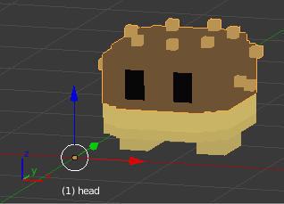
For this we'll need to show more than one view. To do so, click and drag the little triangle from the top right corner to the view, either to its left or down. 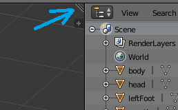
Then hover over each of the views and press
Numpad 1,Numpad 3andNumpad 7to show front, side and top view of the model. Or use each window's View menu if you don't have the numpad in your keyboard.There are several ways to move the cursor to where we want the pivot to be:
Move it by left clicking, but it will not stick at the exact place where we want it to be (look at the different views). If you press
Nto open the hidden menu, there will be a 3D cursor section where you can manually set the position for the 3Dcursor. This will ensure it is right where we want it to be. 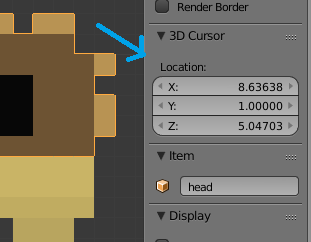 Alternatively, go to Edit mode, select a vertex, edge or face of the mesh with right-click, pressShift+Sand click on 'Cursor to selected'; then go back to Object mode: 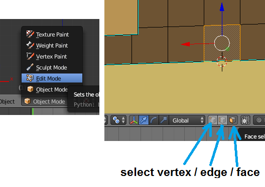Now go to the Tools tab on the menu at the left, and click on 'Set Origin'. Click on the 'Origin to 3D cursor' option. Alternatively, press
Shift+Ctrl+Alt+Cand the options will appear next to your mouse: 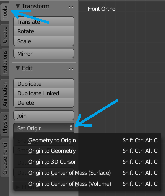The little orange dot for this body part should have moved from (0, 0, 0) to where the 3D cursor is. Try rotating that body part, it should use its new origin as a pivot: 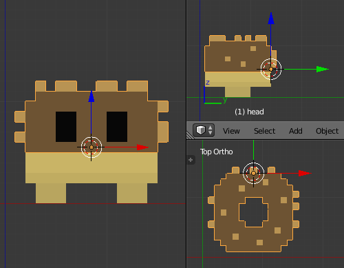
Repeat the steps above for all of the body parts. You might find that some parts don't move/rotate as you'd like, in that case, go back to Qubicle and adjust any matrix/layer, reexport to .obj and do all the steps again until you're satisfied. Getting the pivots right is important to be able to make the animations that you imagine for your model.
Add any helper bones that you might need. At least, add a bone called "root" located at the base of the entity.
To do so, check the 'Custom helper bones' checkbox in the Stonehearth UI section of the Scene menu.
Type the name of the bone, and a size for it in X / Z. The head will be the depth of the bone in the front direction from its center, and the tail the same but facing the back (the tail normally needs to be a negative value). Then press 'Add/Adjust bone'.
You can change the size of any helper bone by typing its name in this section of the add-on, editing the values and pressing the 'Add/Adjust Bone' button.
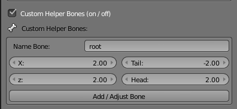 Now you have to move the bone to its correct place. For "root", it has to be the exact center at the base of the entity (the origin/pivot of "root" will be at the ground level, so half of it will be under the grid). We can use the Transform menu to place it in the correct spot more accurately.
Once all the origins are correct, go to 'File > Export > Stonehearth (.json)' and make sure to check "Skeleton" at the bottom left: 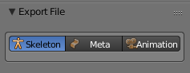 Give a name for the skeleton file and click on "Export File".
Look for your skeleton file wherever you've saved it, and make sure to remove the invalid JSON and add the missing fields to point to the animations and effects folders, so that the game can load it correctly. The Blender add-on can work without those fields but the game won't be able to load the file if we leave it like this: 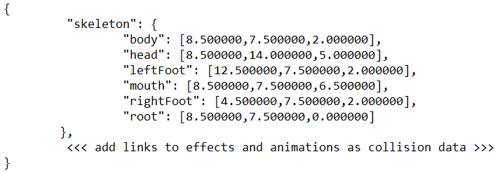
Creating the meta file
The meta file will make animating our custom entity in Blender more convenient. It can be prepared manually or use the add-on to export it. Here are the steps to create it in Blender:
Import the .obj file of your custom model in Blender (if you haven't already).
Check that the bone names are correct in the hierarchy at the top right in case they weren't exported correctly (if you haven't already).
Import the skeleton and click on "Prepare skeleton".
Adjust the size of any helper bone so that they don't get in the view when animating (the skeleton only saved their position/origin).
Now we need to define the hierarchy of the bones:
To do so, first right-click on the child bone, then hold
Shiftand right-click on the parent bone, and then pressCtrl+Pso that we see the 'Set Parent To' menu: 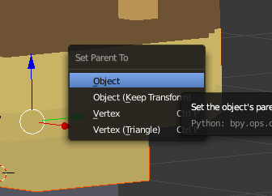 Then click in the 'Object' option. For example, we selected first the leg, then the body, and with both selected in that order we set the hierarchy. Now when we try to move the body, the leg will follow around. Make sure that ultimately, all the bones are descendants of "root" (directly or indirectly).Once all the hierarchies are correct, go to 'File > Export > Stonehearth (.json)' and make sure to check "Meta" at the bottom left: 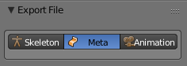 Give a name for the meta file and click on "Export File".
Try loading your skeleton and meta files and preparing the animation. Now try moving a bone and see if the children bones move with it.
Creating animations for custom entities
The workflow is the same than for creating animations for existing rigs, except that we'll first need to create the skeleton and meta files by ourselves as explained above. We can then reuse them to make any animations.
It's also possible to apply offsets if we create several rigs that share the same bones but don't share the pivots.